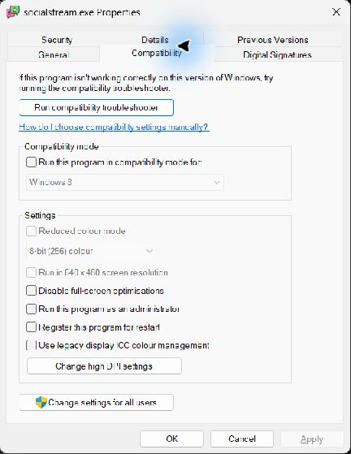

Використовуйте лише для підтвердженої проблеми з правами
Зазвичай OBS і Social Stream не потребують прав адміністратора. Запускайте обидва застосунки звичайним способом, якщо невідповідність прав Windows не підтверджено й підтримка спеціально не попросила перевірити це.
Порожній об’єднаний чат, застарілий URL джерела браузера або старий кеш OBS зазвичай виправляються заміною URL та оновленням кешу, а не режимом адміністратора.
Якщо один застосунок має підвищені права, а інший — ні, Windows може обмежувати їхню взаємодію. Для перевірки невідповідності прав спочатку закрийте обидва застосунки й запустіть їх з однаковим рівнем прав.
Одноразова перевірка запуску від адміністратора
- Закрийте OBS Studio і настільний застосунок Social Stream.
- Натисніть правою кнопкою ярлик OBS Studio і виберіть Запустити від імені адміністратора (Run as administrator).
- Підтвердьте запит служби контролю облікових записів Windows.
- Якщо ви перевіряєте невідповідність між двома застосунками, натисніть правою кнопкою ярлик Social Stream і виберіть Запустити від імені адміністратора (Run as administrator), і також підтвердьте його запит.
- Повторіть точно ті дії, які раніше не працювали. Після завершення закрийте обидва застосунки; одноразове підвищення прав припиняється після їх закриття.
Спочатку краще виконати цю перевірку. Це покаже, чи впливає підвищення прав, без постійної зміни налаштувань застосунків.
Завжди запускати Social Stream від імені адміністратора
- Закрийте Social Stream.
- Натисніть правою кнопкою його ярлик і виберіть Відкрити розташування файлу (Open file location). Якщо Windows відкриє інший ярлик, натисніть його правою кнопкою й виберіть Відкрити розташування файлу (Open file location) знову.
- Натисніть правою кнопкою socialstream.exe і виберіть Властивості (Properties).
- Відкрийте Сумісність вкладці.
- Виберіть Запускати цю програму від імені адміністратора (Run this program as an administrator), а потім виберіть Застосувати (Apply) і OK.

Типовий шлях установлення для поточного користувача:
%LOCALAPPDATA%\Programs\socialstream\socialstream.exeВаш шлях може відрізнятися, якщо ви вибрали інше місце встановлення.
Завжди запускати OBS від імені адміністратора
- Закрийте OBS Studio.
- Натисніть правою кнопкою ярлик OBS Studio і виберіть Відкрити розташування файлу (Open file location).
- Натисніть правою кнопкою obs64.exe і виберіть Властивості (Properties).
- Відкрийте Сумісність вкладці.
- Виберіть Запускати цю програму від імені адміністратора (Run this program as an administrator), а потім виберіть Застосувати (Apply) і OK.

Типовий стандартний шлях 64-бітного OBS:
%ProgramFiles%\obs-studio\bin\64bit\obs64.exeДля переносних або нестандартних інсталяцій ваш шлях може відрізнятися.
Як знову вимкнути режим адміністратора
- Закрийте застосунок.
- Відкрийте для виконуваного файлу Властивості → Сумісність вкладці.
- Очистити Запускати цю програму від імені адміністратора (Run this program as an administrator), а потім виберіть Застосувати (Apply) і OK.
- Зробіть те саме для іншого застосунку, щоб OBS і Social Stream повернулися до однакового звичайного рівня прав.
Не вимикайте контроль облікових записів. Відомості про застосунки з підвищеними правами наведено в поясненні режиму адміністратора від Microsoft.